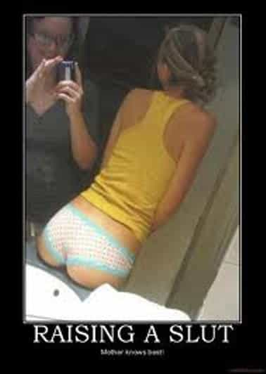
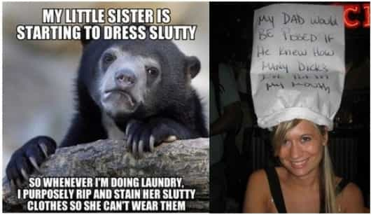

< < < Back
On The Importance Of Family – Return Of Kings
It’s often said that you can’t choose whom to, with whom and what you’re born as, but you can choose whom to relate to. That is the ‘real’ family you’ll build in your tenure on this planet. Don’t misunderstand me; most of us are already born within our ‘real’ families. While some aren’t, even if they have a nominal family – and they have to find and create theirs.
The unit of the ‘family’ provides us with a sense of being rooted, loved and supported in this world, a great blessing for any man to have. The most important trait of a good family, or that of its family members, is of unconditional love and support. Ideally, the man who lacks any of these family members must at least have substitute figures to represent these missing familial archetypes right from his childhood. If not, he will have to fend for himself.
Some men are born with an entire ‘family’, but the family fails in fulfilling its roles, thus resulting in a dysfunctional family. So these men are no better than the men who were born abandoned at birth or childhood, or those who lacked one or more pivotal family member influence while growing up.
To elaborate, let us look closely at the roles of each family member that one is born with. or rather, the dysfunctional versions of them.
“Mama”
An ideal mother is the mother who loves, guides, nurtures and protects her child unconditionally. But a dysfunctional mother can damage her child more than what she can possibly imagine, because she often represents the first individual a child attaches to. And her memory, if she is around in his childhood, will always stay with him throughout his life. Her personal lifestyle, attitudes and character will often indelibly influence his psyche, as most individuals tend to inherit most of their character traits from their mothers. Thus the responsibilities of a mother towards her child are towering.
An emotionally distant mother, abusive mother, reckless mother, manipulative mother, controlling mother, hypocritical mother, slutty mother—all these dysfunctional mother archetypes will often psychologically scar a child. More so, if the child is male, because the relationship he will form with his mother will inevitably influence his relationships with the women later in his life. Solipsistic mother-sister combos are a double whammy situation which can further corrupt his perception of women.

An overly possessive mother will create an emotionally dependent man who can’t disconnect from her. Her emotional manipulation and shallow displays of love are nothing but a ruse to maintain her control over her child, thus stunting his growth as an individual. Having a dysfunctional or emotionally unavailable mother will result in lack of female nurturing within his life, and as an adult he will often unconsciously seek to either get it from other women through ‘neediness’ (opening himself up to manipulation from women), or he will develop indifference and contempt for the female sex. However, the often seen ironical hypocrisy is that modern feminist society inexplicably demeans and blames such men for having ‘mommy issues’, without blaming the mommies who created them.
If the mother is not present during the child’s childhood, then the mother figure who substitutes her should have the qualities of an ideal mother to bear the responsibilities. If she fails to, the child will continue his unconscious attempts through his life to find his ‘mother’ through the opposite sex, or worse, end up no better as being born with a dysfunctional mother.
“Cronus”
The Greek mythological figure of Cronus represents the controlling father who swallowed up all his children in the fear that one day one of them would overthrow him.
A Cronian father archetype becomes even worse if this father is blue pill. Not only will he frustrate your attempts to reason with him, but he will also try to prevent you from asserting your independence by constantly trying to limit and belittle you, to eventually devour your freedom, growth, happiness and eventual existence. Fathers indeed need to impose limits on their families to maintain discipline, but the Cronian father’s limits are often nothing but enslaving shackles. He will forcibly try to beta-size you to keep you plugged within the Matrix he has visualized for you and micromanage your life, to maintain his stranglehold over you . The problems with this type of father is that he cannot ‘let go’, and neither can he accept or see the outdatedness and error of his ways, as he considers himself to be infallible, thus taking no responsibility for being a bad parent.
Life is a never ending relay race, in which one generation completes its lap of life, and then passes the baton for the next lap to the succeeding generation. The Cronian father insists on running your lap as well while refusing to pass the baton to you, out of fear of losing control. The result is that you would be lagging behind your peers in the race of life, because of the limiting influence of your Cronian father’s power games, which would instead occupy your precious time to free yourself from it.
Another trait is that he often exhibits emotional manipulation when his direct attempts to subdue you fail. He keeps restricting you in the name of love and concern, justifying himself as omniscient being who knows what’s best for you without producing a scrap of reason or logic to back up his claim. He wants to have a say in what you do, where you go, whom you hang out, and even the vaginas you must fuck (your choice of women). The Cronian father thus is the Oak tree who protects the baby plant growing in its shade, yet prevents its complete growth by restricting it from the nurturing sunlight.
Cain and Medea
The first human murder on this planet, according to Abrahamic scriptures, was a fratricide committed out of sibling rivalry. Though born from the same parents, Cain killed Abel out of jealousy. Similarly, the Greek mythological figure of Medea represents a woman who first killed her brother out of love for her lover Jason, and later on kills her own children she sires with him. Both Cain and Medea represent dysfunctional sibling archetypes. Sibling rivalry is often the first dose of rivalry that a man experiences in the world as a child, but it can be healthy only as long it is within limits. Else, it creates a dysfunctional paradigm within the framework of a family.
Men growing up with dysfunctional sisters often have a problem respecting or trusting women in general, while those growing up with parasitical brothers will have a problem believing in male solidarity or brotherhood. As with dysfunctional parents, growing up with dysfunctional siblings can contribute to dysfunctional men.

Surviving a dysfunctional family
Dysfunctional families are a curse, and often produce emotionally damaged men. The lack of nurturing that these men received from their families can manifest itself into misanthropy, loneliness, or emotionally needy behavior which seeks to substitute familial love through external relationships. This could result in reaching out to cunning older individuals, friends or women who could exploit these men even more.
Not all mother figures or father figures might have the best interests at heart for these men, as the adage “Old age and treachery will overcome youth and skill” often holds true in today’s often hypocritical world. The man, who has never received proper female nurturing within his family while growing up, will then seek to substitute it through the love of an ’emotionally nurturing’ woman. However, he is then at risk to become over-attached to women, and can get often henpecked if he falls in love with a manipulative woman, who would sense his desperate need for emotional nurturing, and possibly exploit it to her own benefit. Similarly, manipulative friends can exploit a man who has a need for fraternal love which he didn’t receive within his family.
The solution to a dysfunctional family is thus tricky, but fairly simple. It can be solved by:
-
Moving away from your dysfunctional family
- Finding the correct substitute individuals who can fulfill those roles, beginning first with your extended family of relatives (both near and distant), and then your social circle of friends. For married individuals, your spouse’s family could possibly provide effective substitutes too. Build your own tribe from them.
- If everything else fails, get professional counseling to build a support base.
Moving away will provide you the necessary freedom to break out from the debilitating influence of a dysfunctional family, and help you to focus on self reliance and create new relationships. A dysfunctional family often causes emotional isolation and suffocation in an individual, thus moving away is the first step in breaking its psychological stranglehold which limits your freedom and growth as an individual. You don’t need to martyr yourself for being born in a family which doesn’t love or support you.
The second step is indeed the tricky part. It will often entail a lot of trial and error, but exercising rational and correct judgment to select your substitute family figures can solve this easily. It’s easier to start with your extended family first. Your aunts and uncles could possibly fill the roles of parent figures, while your cousins and friends could fulfill that of siblings. A lot of great successful individuals who were either born in dysfunctional families, or had no proper familial upbringing, built their own tribe or family by choosing their own family members from their friend or social circle. A mentor can be a great father figure, while a great friend can be the brother you wanted badly at home but couldn’t have. If you’re lucky to find one, a good woman could simultaneously fulfill the nurturing role of a mother, the intimate role of a lover and the supportive role of a sister, but it will take proper judgment from your end to identify and select her.
The good part is that in this planet of 7 billion people, we can all choose and build our own tribe from people who’ll love us unconditionally, even if we didn’t receive it in the family we’re born into. Those people we choose, can be our real family – to restore balance to our lives.
Read More: How To Forgive Your Family


{kind=link}
{kind=link}
{kind=link}
{kind=link}
{kind=link}